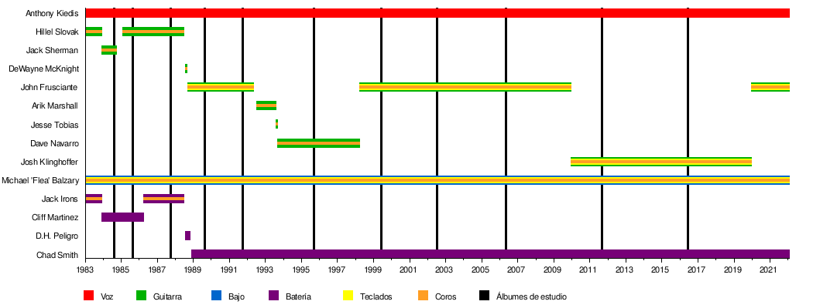

El núcleo de la banda fue formado en la preparatoria Fairfax High School como Anthym con el chileno Alain Johannes como vocalista. Anthony Kiedis, quien estuvo haciendo una pequeña carrera como actor juvenil televisivo bajo el apodo de Cole Dammett, solía ser su presentador y "hypeman". En febrero de 1983, Anthony fue pedido por su amigo Gary Allen de la banda Neighbour's Voices para que lo teloneara junto a sus amigos.
Bajo la influencia principal de las bandas neoyorkinas Defunkt10 y Grandmaster Flash and the Furious Five, armaron una banda para la ocasión con el nombre de "Tony Flow and the Miraculously Majestic Masters of Mayhem". El rendimiento en vivo de la banda fue tan bueno que se les pidió regresar la semana siguiente. Debido a este inesperado éxito, los miembros de la banda cambiaron el nombre por el de Red Hot Chili Peppers, debido a que vieron el nombre original un poco incómodo. Luego siguieron tocando en varios conciertos por clubes de Los Ángeles y cabarets como el Kit Kat Club. Es en estos primeros momentos cuando empiezan a hacerse populares por sus actuaciones en las que aparecían completamente desnudos, con solo un calcetín en los genitales (Sock on Cock). Seis de las canciones que tocaban en esos shows fueron grabadas en su primer demo.
Varios meses después de su primera actuación, la banda firmó con la compañía discográfica EMI. Pero dos semanas antes, What Is This? (el nombre posterior de los Anthym) había obtenido contrato con MCA, por lo que Slovak e Irons dejaron Red Hot Chili Peppers y se dedicaron a What Is This?. Kiedis y Flea no pensaron en disolver la banda, sino que decidieron reclutar a nuevos miembros. Cliff Martínez, un conocido de Flea de la banda punk The Weirdos, pidió sumarse a los Chili Peppers poco después. También se uniría Jack Sherman, "el rey pirata".
Andy Gill, el guitarrista de Gang of Four, también pioneros en la incorporación del funk al estilo punk, fue contratado para producir su primer álbum.16 A pesar de que Kiedis y Flea dudaron, él empujó a la banda a tocar música más viable comercialmente. En un principio Kiedis quería titular el disco True men don't kill coyotes, pero la compañía quería que el título fuese The Red Hot Chili Peppers, a lo que el grupo tuvo que acceder finalmente. El disco salió el 10 de agosto de 1984 y fue un fracaso comercial.17 Vendió aproximadamente 500.000 unidades y obtuvo poco reconocimiento. La siguiente gira estuvo un poco mejor, aunque Kiedis y Sherman tenían una relación muy tensa. Sherman fue despedido poco después y Slovak regresó a la banda, después de hartarse de What Is This?.
George Clinton (el líder de Parliament y Funkadelic) fue elegido (a petición de Anthony y Flea) para producir el próximo álbum de la banda, Freaky Styley.
El álbum fue grabado en el Detroit's famed R&B and funky United Sound Systems studios en el borde de la Universidad Estatal de Wayne.18 Clinton combinó diversos elementos del punk y el funk en el repertorio de la banda, que permitieron incorporar variedad a la música. De hecho en la canción "Hollywood", que es una adaptación del tema "África" de los legendarios funkateers de Nueva Orleans The Meters, participa en el Saxofón el músico Maceo Parker, que al igual que el bajista Bootsy Collins, había grabado para el padre del Funk, James Brown, y el mismo Clinton. El álbum apenas superó en ventas al anterior; aunque, eso sí, pudieron ser invitados a un importante festival de rock en Alemania (Rockpalast 85) como invitados de Clinton y la P-Funk All-Stars, además de aparecer tocando el epiléptico tema "Blackeyed Blonde" en una escena de la película sobre skaters Trashin dirigida por David Winters el año siguiente.
El álbum fue publicado el 16 de agosto de 1985, pero aunque la banda tuvo una relación mucho mejor con Clinton que con Gill, el disco fue apenas más exitoso que el primero, vendiendo 650.000 copias y no tuvo llegada a ningún Chart, pese a contar con la producción de una leyenda viviente como el "Dr. Funkenstein". La posterior gira no fue considerada lo suficientemente productiva para la banda.
En 1986 compusieron para la película Tough Guys20 el tema "Set It Straight", que todavía no ha sido publicado en ningún álbum. En una escena del filme se puede ver a Anthony Kiedis, Flea, Hillel Slovak y Cliff Martinez tocando parte de este tema. Ese mismo año también colaboraron en el tema "Reputation" para el álbum de Andre Foxxe I'm Funk And I'm Proud.
